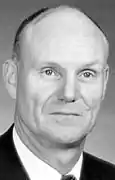

Теодор Локерт Томас (народився 13 квітня 1920 р. — 24 вересня 2005 р.) був американським інженером-хіміком і адвокатом, який написав понад 50 наукових фантастичних коротких оповідань, виданих між початку 50-х до кінця 1970-х років. Він також співпрацював з двома романами з Кейт Вільгельм, а також випускав оповідання під псевдонімами Леонарда Локхарда та Когсвелла Томаса та був номінований на нагороду "Туманність" та премію "Уго".
(1920-2005) американський автор та адвокат, багатолюдний у журналах під його власним ім'ям, який він іноді вимовляв як Тед Томас, і як Леонард Локхард, псевдонім, який він використовував для своєї серії Patent Attorney (вісім розповідей 1952-1964 в Astounding / Analog), деякі з яких були з Charles L Harness, включаючи "Професійний підхід" (вересень 1962 аналог, електронна книга 2007 року). Він почав публікувати роботи жанрового інтересу з двома одночасними оповіданнями "The Revisitor" для космічної наукової фантастики у вересні 1952 року та "Неминуча професія" для вражаючих у вересні 1952 року, як і Леонард Локард з Charles L Harness, і часто виходив у журнали аж до 1981 року казки, компетентно розроблені для своїх ринків, найефективнішими, можливо, є такі, як "The Weather Man" (червень 1962 Analog), встановлені на майбутню Землю, де домінують Управління погодного контролю (див. Weather Control). З Кейт Вільгельм він написав дві романи "Клон" (грудень 1959 "Фантастичний", як тільки сам Томас; значна кількість показників 1965 року) та "Рік хмари" (1970 рік), обидва з неприродними катастрофами. Епанонімна загроза в першому романі являє собою рідкісне використання в СФ того, що є клоном у строгому біологічному сенсі; міжзоряна хмара, в яку земля занурюється, у другій перетворює воду на желатин.
Суперечливий есе Томаса про Жюля Верна "Водяні чудеса капітана Немо" (Галактика, грудень 1961 року), стверджує, що 20 000 ліг під морем (1870) сповнена елементарними науковими помилками. Ці твердження засновані, на жаль, не на оригінальному тексті Верна, а на перекладі Льюїса Мерсьє в 1873 році; проголошені помилки були пов'язані з Мерсье, а не з самим автором. Лише в останні роки репутація Верна почала відновлюватися з англійської мови в цій школі.